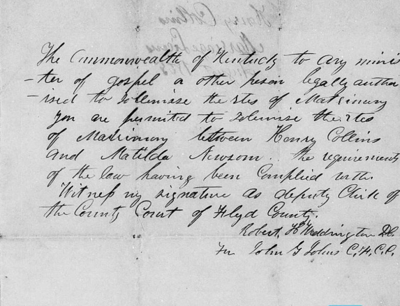
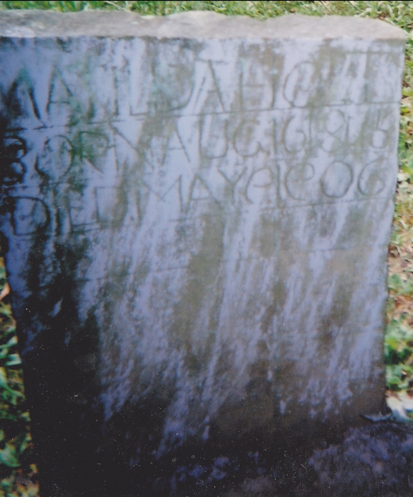
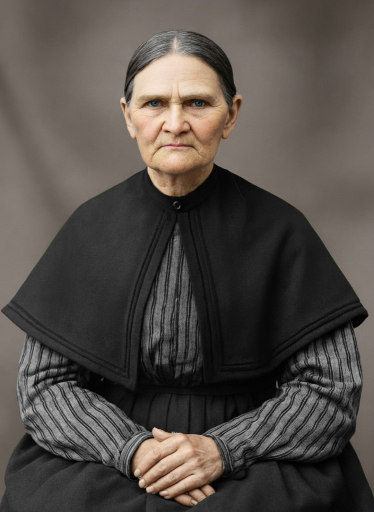

The Research Foundation
I spent many years chasing the Cherokee stories that were passed down through every generation of my family. I have already shared the results of this search with a lot of my close cousins, but now I feel it is time to share the full documented truth with a lot more of them here. My investigation moved past the family legends to look at primary records and DNA data — and what I found was not a Cherokee princess, but something far more fascinating: a Melungeon heritage stretching back to the Appalachian frontier, anchored at its center by one woman: Matilda Baldwin.
Matilda sits at the crossroads of this ancestral research, representing a bridge between the documented history of the Mayflower and the oral traditions of the Melungeon frontier. The reconstruction of her life is built upon a "reasonably exhaustive search" of primary sources, including Civil War pension rejections, marriage bonds, and multi-decade census analysis.
Two major breakthroughs define this research:
KEY FINDINGS
- Mayflower Link: Through Matilda's mother, Sarah Elliott, a direct line to Edward Doty, a passenger on the 1620 Mayflower, has been verified. This provides the formal documentation for membership in the Alabama Society of Mayflower Descendants.
- The Henry Holt Alias: A critical discovery — Henry Holt spent his early adult life under the alias "Henry Collins." The 1866 Floyd County marriage bond, issued to "Henry Collins" for his marriage to Matilda, serves as the primary genealogical link connecting his legal birth name to his alias, solving a century-old family mystery.

Early Life and the Two Husbands
Matilda Baldwin was born in 1845, the daughter of Solomon Baldwin and Sarah Elliott. Her life was shaped by two distinct marriages: first to Lackey Newsom, and later to Henry Holt.
In the 1860 Pike County Census, Matilda (14) was already married to Jackey Newsome (22). They lived next door to Jackey's parents, Frederick and Anzy Newsome. Lackey Newsom was killed in 1865 — a casualty of Union service — leaving Matilda a widow with young children. In 1866, she married Henry Holt (using his alias Henry Collins) in Floyd County, Kentucky.

Correcting the Historical Record
While census records are primary sources, Barrett's research identified several points where enumerator data conflicts with broader evidence.
| Record | Original Entry | Corrected Finding |
|---|---|---|
| Birthplace of Parents | Both parents born in Virginia | Correct for Solomon Baldwin; Sarah Elliott was likely born in Kentucky or North Carolina |
| Birth Date | August 1844 | Other family records and her gravestone at Sam Hall Cemetery point to 1845 |
| Marriage Date (1900 Census) | Married to Henry for 35 years (pointing to 1865) | Supports living as a family unit after Lackey Newsom's death, before the 1866 legal marriage bond |

The Melungeon Convergence
Barrett's research moves beyond vague "Cherokee" stories to identify specific Melungeon markers on both sides of Matilda's family:
- The Maness Line: On the Baldwin side, the Maness surname is a key Appalachian tri-racial marker.
- The Collins/Johnson Line: On the Holt side, the lineage traces back to the Johnson and Collins families of Newman's Ridge, the historical heart of the Melungeon community.
This powerful convergence — two distinct Melungeon branches meeting in one Kentucky cabin — explains why the children often appeared "pure Indian" to relatives. It was not a single mystery tribe at work, but concentrated genetic signatures from two separate Appalachian frontiers.
Matilda as Matriarch

"Matilda and Henry lived on a little flat place carved out of Straight Fork. It was very rough terrain and their log cabin stood on just a little flat place. She raised twelve children there." — Fern Rosik Glasgow, descendant memoir
Matilda didn't just survive the rugged isolation of the Kentucky mountains — she mastered them. Living on a "little flat place" carved out of the Straight Fork of Bear Fork, she raised twelve children in a log cabin that served as a schoolhouse, a pharmacy, and a sanctuary.
Her home was a gathering point for the family even after her death. When her grandson Landon ran away as a young man, Matilda was the only person with the social authority to bring Henry (normally banned from the Newsom property) onto the farm to search for him. Even after death, "Granny Holt" remained the unifying force.
The Children of Matilda Baldwin
Two groups of children:
THE NEWSOM CHILDREN (from first marriage to Lackey Newsom)
- John Wesley Newsom
- Mahala Newsom
- Noah Webster Newsom
Because Lackey was killed by Union forces, these children grew up with a complicated legacy of sacrifice.
THE HOLT CHILDREN (from marriage to Henry Holt)
Mary (1867), Evan (1869), Andrew (1872), Darkis (1874), Perian (1875), Silas (1877), Rena (1879), Liza (1880), Francis (1882)
These nine children were the first generation to carry the Holt name.
A Life of Service to the Community
Through my analysis of the local geography and the complete lack of medical facilities in the region at the time, I've identified Matilda as the de facto hospital for Robinson Creek.
I believe Matilda utilized my 2nd great-grandfather Henry's famous ginseng and local herbal lore to care for women who had no other medical options. In a time and place where the nearest hospital was a multi-day journey away, Matilda was the biological and medical lifeline for her neighbors. As a Granny Midwife, her expertise was a blend of inherited Mayflower grit and the deep botanical wisdom of the Melungeon ridges.
THE MIDWIFE'S KIT
Without formal doctors, Matilda relied on her knowledge of the land, likely utilizing:
Her role as a midwife often transcended medicine. Though a deep rift existed between her Newsom sons and her husband Henry, Matilda was the only one allowed to cross those battle lines. When a new grandchild was entering the world, the feuds were silenced as Matilda took charge of the birthing room. For the Melungeon women of the surrounding ridges, like the Collinses and Johnsons who were often marginalized, Matilda was a trusted ally who provided the care they were denied elsewhere.
The Enduring Legacy of Granny Holt
Matilda Baldwin's story is more than a collection of dates and census records; it is the story of the American frontier itself. She was the silent force that stabilized a family divided by the scars of the Civil War and the social isolation of the Kentucky ridges. By documenting her life, I have been able to reconcile the legendary Cherokee stories of my youth with the biological truth of her Melungeon heritage and her documented descent from the Mayflower pilgrims.
Matilda's life ended exactly as she had lived it, in the middle of domestic life and community connection. In 1906, at age 62, she suffered a heart attack while churning butter and talking to her daughter-in-law, Eliza Jane Holt. She was buried at the Sam Hall Cemetery, leaving behind a legacy as a woman who could bridge the gap between a Pilgrim past and a Melungeon future.
Primary Source Appendix: Matilda Baldwin (1845–1906)
- Marriage Bond (1860): Floyd County, KY. Marriage to Lackey Newsom.
- Civil War Service Record (1861–1865): 39th Kentucky Infantry, Co. K. Lackey Newsom's enlistment and burial.
- Marriage Bond (1866): Floyd County, KY. The smoking gun document issued to Henry Collins and Matilda Newsom.
- U.S. Federal Census (1870/1880): Showing the family units in Laynerville and Antioch, Floyd, KY.
- Veterans Schedule (1890): Documenting Henry Holt's claim of service — the record that officially linked the Holt and Collins identities.
- U.S. Federal Census (1900): Confirming Matilda's literacy, 35-year marriage, and the presence of granddaughter Rhoda Caudill.
- Death & Burial Record (1906): Family Bible and Sam Hall Cemetery markers.
Matilda Baldwin's Two Families
| Husband 1: Lackey G. Newsom (1838–1865) | Husband 2: Henry Holt (Collins) (1844–1913) |
|---|---|
| John Wesley Newsom (1861–1927) | Mary Holt (1866–1953) |
| Ina Mae Newsom (1862–1928) | Evan Holt (1870–1952) |
| Mahala Newsom (1863–1928) | Andrew Jackson Holt (1872–1944) |
| Noah Webster Newsom (1865–1947) | Darcus Sious Holt (1874–1957) |
| Perian Holt (1875–1904) | |
| Silas Holt (1877–1936) | |
| Rena Holt (1879–1925) | |
| Liza Holt (1882–1964) |